IA-MASTERCLASS
- GEMINI

CHAT-GPT NOTEBOOKLM
NOTEBOOKLM CONTATO
CONTATO

CHAT-GPTNOTEBOOKLMCONTATOConheça e explore as principais Inteligências Artificiais da atualidade e suas funcionalidades.
Compreenda e navegue pelo futuro!
Sistemas que simulam a inteligência humana para aprender, raciocinar e resolver problemas de forma autônoma através de dados.
SAIBA MAISTutoria personalizada e resumos inteligentes que adaptam o aprendizado ao seu ritmo, organizando conteúdos e tirando dúvidas
SAIBA MAISAutomação de tarefas repetitivas e análise de dados em larga escala para potencializar a produtividade e a tomada de decisões.
SAIBA MAIS
A inteligência artificial é um campo da ciência da computação que se dedica ao estudo e ao desenvolvimento de máquinas e programas computacionais capazes de reproduzir o comportamento humano na tomada de decisões e na realização de tarefas, desde as mais simples até as mais complexas. É comumente referida pela sigla IA ou AI (em inglês, artificial intelligence).
Com maior desenvolvimento a partir da década de 1950, a inteligência artificial já faz parte da vida cotidiana das pessoas por meio dos assistentes de voz, dos mecanismos de pesquisa, dos carros autônomos e das redes sociais. Apesar de trazerem inúmeros benefícios e avanços importantes em diversas áreas, muito se debate a respeito dos limites éticos da inteligência artificial e do papel que elas desempenham na nossa sociedade atual.
Integrar a Inteligência Artificial à sua rotina de estudos não é sobre substituir seu esforço, mas sim sobre qualificá-lo. Pense na IA como um catalisador que acelera processos repetitivos e oferece novas perspectivas sobre o conteúdo, liberando seu tempo para o que realmente importa: pensar criticamente, aprofundar o conhecimento e conectar ideias. Os principais benefícios incluem:
É fundamental lembrar: a IA é uma ferramenta de apoio, não um substituto para o seu cérebro. O verdadeiro aprendizado acontece quando você interage com o material, questiona as respostas e constrói seu próprio raciocínio. Use a tecnologia para potencializar sua inteligência, não para terceirizá-la.
A inteligência artificial deixou de ser uma promessa futurista para se tornar uma colega de trabalho presente em quase todos os setores. No ambiente profissional atual, ela atua principalmente como um aumentador de capacidades, permitindo que humanos foquem em tarefas estratégicas enquanto a máquina lida com o processamento denso. Para entender a IA no trabalho, podemos dividi-la em três frentes principais:
A tendência não é a substituição total do humano, mas o conceito de "Human-in-the-loop" (Humano no ciclo). A IA faz o trabalho pesado e gera uma base, mas o discernimento ético, a criatividade emocional e a decisão final continuam sendo responsabilidades humanas.